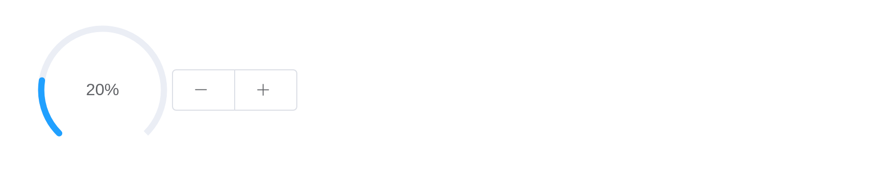

Progress shows how far an operation has got;
update_el_progress() moves it from the server.
Linear progress bar
format, a JS() function, writes the
text.
tagList(lapply(list(
el_progress("p1", percentage = 50),
el_progress("p2", percentage = 100, format = JS("function(p) { return p === 100 ? 'Full' : p + '%'; }")),
el_progress("p3", percentage = 100, status = "success"),
el_progress("p4", percentage = 100, status = "warning"),
el_progress("p5", percentage = 50, status = "exception")),
function(x) tags$div(style = "width: 400px; margin-bottom: 12px", x)))Internal percentage
tagList(lapply(list(
el_progress("i1", percentage = 70, text_inside = TRUE, stroke_width = 26),
el_progress("i2", percentage = 100, text_inside = TRUE, stroke_width = 24, status = "success"),
el_progress("i3", percentage = 80, text_inside = TRUE, stroke_width = 22, status = "warning"),
el_progress("i4", percentage = 50, text_inside = TRUE, stroke_width = 20, status = "exception")),
function(x) tags$div(style = "width: 400px; margin-bottom: 12px", x)))Custom color
color is a colour, a JS() function of the
percentage, or a list of stops.
tagList(lapply(list(
el_progress("c1", percentage = 20, color = "#409eff"),
el_progress("c2", percentage = 50, color = JS(
"function(p) { return p < 30 ? '#909399' : p < 70 ? '#e6a23c' : '#67c23a'; }")),
el_progress("c3", percentage = 80, color = list(
list(color = "#f56c6c", percentage = 20), list(color = "#e6a23c", percentage = 40),
list(color = "#5cb87a", percentage = 60), list(color = "#1989fa", percentage = 80),
list(color = "#6f7ad3", percentage = 100)))),
function(x) tags$div(style = "width: 400px; margin-bottom: 12px", x)))Circular progress bar
el_progress("o1", type = "circle", percentage = 0)
el_progress("o2", type = "circle", percentage = 25)
el_progress("o3", type = "circle", percentage = 100, status = "success")
el_progress("o4", type = "circle", percentage = 70, status = "warning")
el_progress("o5", type = "circle", percentage = 50, status = "exception")Dashboard progress bar
ui <- el_page(el_progress("dash", type = "dashboard", percentage = 10),
el_button_group(el_button("minus", NULL, icon = "el-icon-minus"),
el_button("plus", NULL, icon = "el-icon-plus")))
server <- function(input, output, session) {
pct <- reactiveVal(10)
observeEvent(input$plus, pct(min(100, pct() + 10)))
observeEvent(input$minus, pct(max(0, pct() - 10)))
observe(update_el_progress(id = "dash", percentage = pct()))
}
shinyApp(ui, server)
API
Attributes
| Element | In R | Description | Type | Accepted | Default |
|---|---|---|---|---|---|
percentage |
percentage |
percentage, required | number | 0-100 | 0 |
type |
type |
the type of progress bar | string | line/circle/dashboard | line |
stroke-width |
stroke_width |
the width of progress bar | number | — | 6 |
text-inside |
text_inside |
whether to place the percentage inside progress bar, only works when
type is ‘line’ |
boolean | — | false |
status |
status |
the current status of progress bar | string | success/exception/warning | — |
color |
color |
background color of progress bar. Overrides status
prop |
string/function/array | — | ’’ |
width |
width |
the canvas width of circle progress bar | number | — | 126 |
show-text |
show_text |
whether to show percentage | boolean | — | true |
stroke-linecap |
stroke_linecap |
circle/dashboard type shape at the end path | string | butt/round/square | round |
format |
format |
custom text format | function(percentage) | — | — |
define-back-color |
define_back_color |
background color of progress bar (hex format) | string | — | — |
text-color |
text_color |
text color of progress bar (hex format) | string | — | — |